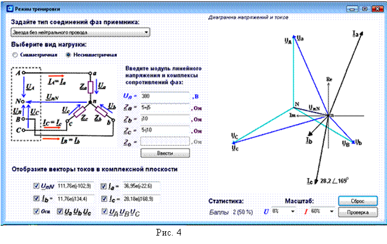

6. ОСНОВНЫЕ СООТНОШЕНИЯ МЕЖДУ ЭЛЕКТРИЧЕСКИМИ ВЕЛИЧИНАМИ
В ТРЁХФАЗНЫХ ЦЕПЯХ
ПРИ СОЕДИНЕНИИ ФАЗ ПРИЁМНИКА ЗВЕЗДОЙ БЕЗ НЕЙТРАЛЬНОГО
ПРОВОДА И РАЗЛИЧНЫХ РЕЖИМАХ ИХ РАБОТЫ
1. У симметричной трёхпроводной трёхфазной системе (с одинаковыми сопротивлениями во всех фазах звезды, т. е. Za = Zb = Zc = Zф) модули комплексов токов фаз одинаковые (Ia = Ib = Ic = Iф = Uф/Zф, где модуль фазного напряжения Uф = Uл /), а также одинаковые сдвиги фаз
jа = jb = jc = jф = arctg(Хф/Rф)
между токами Ia, Ib, Ic и соответствующими фазными напряжениями (см. рис. 3)
Uа = Uф, Ub = Uф Uc = Uф .
.
2. У несимметричной трёхфазной системы при соединении фаз приёмника по схеме звезда без нейтрального провода имеет место напряжение смещения нейтрали (рис. 4), которое вычисляют по формуле

Расчёт
фазных напряжений и токов приёмника и построение векторной диаграммы
электрических величин в комплексной плоскости выполняется в последовательности,
описанной в предыдущем слайде. В этом случае сумма комплексов фазных токов
Ia + Ib + Ic = 0.
3. У симметричного и несимметричного трёхпроводного приёмника, соединённого звездой, при обрыве фазного провода, например, провода "а" (комплексная проводимость Ya = 1/Zа = 0), появляется напряжение смещения нейтрали
Комплексы фазных напряжений
Uа = UA - UnN; Ub = UB - UnN; Uc = UC - UnN,
а фазные токи в необорванных фазах приёмника (при Ia = 0)
Ib = Ub/Zb; Ic = Uc/Zc
и сдвинуты относительно своих фазных напряжений на углы jb и jc.
Действующие токи в фазах b и с несимметричного приёмника
Iв = Iс = Uл / (êZb + Zcê),
а у симметричного приёмника (Zb = Zc = Zф) Iв = Iс = Uл / 2Zф.
4. При обрыве линейного, например, А провода трёхфазная система напряжения преобразуется в однофазную систему с теми же токами в фазах, что и при обрыве фазного провода а, однако в этом случае напряжение Uа = 0.